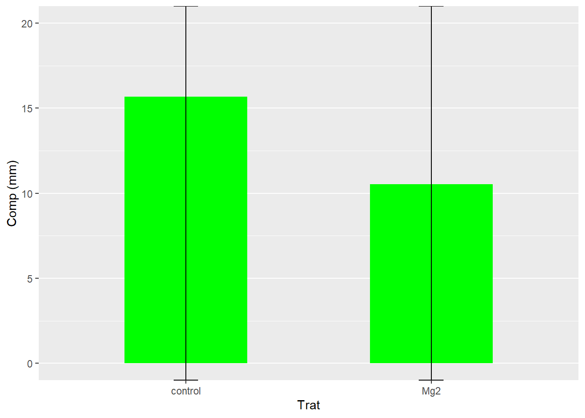

Code
# A tibble: 6 × 3
trat rep comp
<chr> <dbl> <dbl>
1 Mg2 1 9
2 Mg2 2 12.5
3 Mg2 3 10
4 Mg2 4 8
5 Mg2 5 13.2
6 Mg2 6 11 Aqui veremos como determinar oo tipo de analise de acordo com o numero e tipo de variavel independente (niveis do Fator, numero de tratamentos ou grupos que serão observados e comparados.
Nós veremos o Test T, Teste T paramétrico e Teste para dados não paramétricos. Vamos lá?
O teste t é uma ferramenta estatística usada para comparar duas médias provenientes de dois tratamentos ou grupos distintos, com o objetivo de avaliar se a diferença entre elas é estatisticamente significativa. Assim como outros testes estatísticos, o teste t fornece um valor de p, que representa a probabilidade de a diferença observada entre as médias ter ocorrido ao acaso.
Existem dois tipos principais de teste t:
Teste t para amostras dependentes (pareadas): utilizado quando as duas médias comparadas vêm da mesma população, mas em momentos diferentes (por exemplo, antes e depois de um tratamento).
Teste t para amostras independentes (não pareadas): indicado quando se comparam duas populações distintas, sem relação entre si.
Exemplo prático: comparação entre dois tratamentos independentes
Para esse xemplo usaremos um conjunto de dados, no qual, um pesquisador realizou um experimento para avaliar o impacto do magnésio (Mg), adicionado à solução nutritiva do solo, no controle de uma doença fúngica em plantas de arroz. O experimento seguiu um delineamento inteiramente casualizado, com 10 repetições, sendo cada repetição representada por um vaso com uma planta.
Dois tratamentos foram aplicados:
Controle (testemunha): sem adição de magnésio.
Tratamento com Mg: suplementado com magnésio na concentração de 2 mM.
Para cada vaso, foi registrada a média do comprimento das lesões em um determinado tempo após a inoculação do patógeno. O objetivo é verificar se há diferença significativa entre os dois grupos.
Antes da análise estatística, é necessário:
Carregar os pacotes estatísticos apropriados.
Importar o conjunto de dados com os resultados do experimento.
# A tibble: 6 × 3
trat rep comp
<chr> <dbl> <dbl>
1 Mg2 1 9
2 Mg2 2 12.5
3 Mg2 3 10
4 Mg2 4 8
5 Mg2 5 13.2
6 Mg2 6 11 Vamos iniciar a exploração dos dados realizando análises estatísticas descritivas, que nos permitem entender melhor as características gerais do conjunto de dados. Neste contexto, iremos calcular medidas de tendência central e de dispersão, como:
Média (mean): representa o valor médio dos dados;
Variância (var): indica o quanto os valores se afastam da média;
Desvio padrão (sd): mede a dispersão dos dados em torno da média;
Erro padrão (se): estima a variabilidade da média em diferentes amostras;
Intervalo de confiança (ci): utilizado aqui com finalidade visual, para indicar a margem de variação esperada da média.
Essas métricas ajudam a resumir e visualizar os dados de forma clara e fundamentada, servindo como base para análises comparativas ou inferenciais.
# A tibble: 2 × 7
trat mean_com sd_comp var_comp n se_comp ci
<chr> <dbl> <dbl> <dbl> <int> <dbl> <dbl>
1 Mg2 10.5 1.54 2.39 10 0.515 -Inf
2 control 15.7 1.27 1.61 10 0.424 -InfUma das formas mais diretas de interpretar um conjunto de dados é por meio da visualização gráfica. Quando há mais de seis repetições por grupo, uma alternativa eficiente é utilizar boxplots acompanhados dos pontos individuais, o que permite observar a distribuição, tendência central e possíveis outliers.
No entanto, neste caso, optaremos por representar os resultados em um gráfico de barras verticais, utilizando a média de cada grupo e adicionando o erro padrão (SE) como barra de erro. Essa abordagem facilita a comparação entre os grupos e fornece uma ideia da variabilidade dos dados, mantendo a clareza visual.
Agora, os dados são representados com a inclusão do intervalo de confiança (IC). No gráfico a seguir, as barras verticais indicam o intervalo de confiança de 95% em torno da média de cada grupo. Essa visualização oferece uma noção da precisão das estimativas e permite avaliar, de forma gráfica, a sobreposição ou distinção entre os grupos analisados.

O conjunto de dados está organizado no formato largo, onde a variável de interesse (resposta) está concentrada em uma única coluna. Para facilitar a análise comparativa entre os tratamentos, é comum transformar esses dados em um formato que separe as respostas em colunas distintas para cada tratamento. Uma forma eficiente de fazer isso é utilizando a função pivot_wider(), que reorganiza os dados criando uma coluna para cada grupo de tratamento.
Dessa forma, geramos um novo conjunto chamado data_mg2, que apresenta as respostas (como o tamanho da lesão) distribuídas em colunas separadas para cada tratamento. No entanto, para criar gráficos com o ggplot2, é necessário trabalhar com os dados no formato longo, ou seja, com uma coluna contendo as respostas e outra indicando o tratamento. Portanto, é possível visualizar diretamente as respostas usando o conjunto original, que já está estruturado no formato adequado para o ggplot2.
[1] "trat" "rep" "comp"# A tibble: 10 × 3
rep Mg2 control
<dbl> <dbl> <dbl>
1 1 9 13.7
2 2 12.5 15.9
3 3 10 15.7
4 4 8 14.2
5 5 13.2 15.9
6 6 11 16.5
7 7 10.8 18
8 8 9.5 14.4
9 9 10.8 16.4
10 10 10.4 16 O teste t é uma análise estatística do tipo paramétrica, o que significa que sua aplicação depende do cumprimento de duas premissas fundamentais: a normalidade dos dados e a homogeneidade das variâncias entre os grupos (também chamada de homocedasticidade).
Se os dados não atenderem à distribuição normal, é possível aplicar transformações apropriadas (como logaritmo, raiz quadrada, entre outras) para aproximá-los da normalidade, tornando o uso do teste t estatisticamente válido.
Welch Two Sample t-test
data: data_mg2$Mg2 and data_mg2$control
t = -8.1549, df = 17.354, p-value = 2.423e-07
alternative hypothesis: true difference in means is not equal to 0
95 percent confidence interval:
-6.490393 -3.825607
sample estimates:
mean of x mean of y
10.520 15.678 A ordem correta para a aplicação do teste t envolve a verificação prévia de suas premissas. O procedimento recomendado é o seguinte:
Teste de normalidade: utilize a função shapiro.test() para avaliar se os dados seguem uma distribuição normal;
Teste de homogeneidade das variâncias: aplique var.test() para verificar se os grupos possuem variâncias semelhantes (homocedasticidade);
Aplicação do teste t: se ambas as premissas forem atendidas (p > 0,05 nos testes anteriores), então o t.test() pode ser utilizado com segurança.
Caso o teste de variância indique heterocedasticidade (p < 0,05), ainda é possível realizar o teste t, mas com o argumento var.equal = FALSE, o que ajusta o teste para variâncias diferentes.
Além disso, quando os dados são pareados (por exemplo, medidas antes e depois em um mesmo indivíduo), deve-se incluir o argumento paired = TRUE na função t.test().
A homocedasticidade — ou homogeneidade das variâncias — é uma premissa essencial para a aplicação do teste t. Para verificar essa condição no caso de dois grupos, utiliza-se o teste F, que compara as variâncias dos grupos.
No R, essa análise pode ser realizada por meio da função var.test(), que deve ser aplicada a dois vetores numéricos representando os grupos a serem comparados. Para isso, os dados devem estar organizados em formato largo, de modo que cada grupo esteja em uma coluna separada.
Após executar o teste, observe o valor de p na saída da função. Um p-valor maior que 0,05 indica que não há diferença significativa entre as variâncias (homocedasticidade), permitindo o uso do teste t com o argumento var.equal = TRUE. Caso contrário, considera-se que há heterocedasticidade, e deve-se utilizar var.equal = FALSE.
F test to compare two variances
data: Mg2 and control
F = 1.4781, num df = 9, denom df = 9, p-value = 0.5698
alternative hypothesis: true ratio of variances is not equal to 1
95 percent confidence interval:
0.3671417 5.9508644
sample estimates:
ratio of variances
1.478111 Além do teste estatístico de variância, a homocedasticidade também pode ser avaliada de forma gráfica. Uma abordagem comum é a utilização de um boxplot dos resíduos em relação aos tratamentos. Quando as variâncias são homogêneas, espera-se que os boxplots tenham tamanhos e amplitudes semelhantes entre os grupos, indicando distribuição equilibrada dos resíduos.
A normalidade dos dados é outro pressuposto fundamental para testes paramétricos. Ela pode ser verificada tanto por métodos gráficos — como histogramas, Q-Q plots e densidade — quanto por testes estatísticos específicos. Um dos mais utilizados é o teste de Shapiro-Wilk, acessado no R pela função shapiro.test(), que avalia se os dados seguem uma distribuição normal.
A verificação visual da normalidade pode ser feita por meio do QQ-Plot (Quantile-Quantile Plot), uma ferramenta gráfica que compara os quantis observados da amostra com os quantis esperados de uma distribuição normal. Se os pontos do gráfico se alinharem aproximadamente sobre a linha de referência, é um indicativo de que os dados seguem uma distribuição gaussiana.
No R, esse tipo de gráfico pode ser facilmente construído com as funções qqnorm() (que gera o gráfico) e qqline() (que adiciona a linha teórica de referência). Recomenda-se aplicar essas funções individualmente para cada variável que se deseja avaliar.
Feito isso vamos partir para tratamentos dependentes.
Caso os dados não atendam às premissas de normalidade, é necessário utilizar métodos alternativos que não dependem da suposição de distribuição normal. No caso de comparações entre dois grupos, existem duas abordagens principais:
Testes não paramétricos, como o teste de Wilcoxon para amostras pareadas ou o teste de Mann-Whitney para amostras independentes;
Métodos baseados em reamostragem, como o bootstrapping, que permitem inferências estatísticas sem depender da forma da distribuição dos dados
Para isso vamos usar um conjunto no qual, foi realizado um experimento para avaliar o impacto do uso de uma escala na acurácia e precisão de avaliações visuais da severidade de uma doença, feitas por diferentes avaliadores. A hipótese em teste é que o uso da escala melhora a acurácia das estimativas em comparação com avaliações realizadas sem esse auxílio visual.
Vamos usar conjunto de dados de um experimento, no qual dez avaliadores foram selecionados aleatoriamente e realizaram duas avaliações, uma com o uso da escala e outra sem. Foram obtidas cinco variáveis relacionadas à concordância entre as estimativas e os valores reais da severidade. Como cada avaliador foi avaliado duas vezes ao longo do tempo, os dados são considerados pareados, caracterizando amostras dependentes.
O primeiro passo da análise é realizar a importação dos dados e o preparo do conjunto para as análises subsequentes, assegurando que as variáveis estejam corretamente estruturadas para aplicar os testes apropriados.
# A tibble: 6 × 7
assessment rater acuracia precisao vies_geral vies_sistematico vies_constante
<chr> <chr> <dbl> <dbl> <dbl> <dbl> <dbl>
1 Unaided A 0.809 0.826 0.979 1.19 0.112
2 Unaided B 0.722 0.728 0.991 0.922 -0.106
3 Unaided C 0.4 0.715 0.783 1.16 0.730
4 Unaided D 0.818 0.819 0.999 0.948 -0.00569
5 Unaided E 0.748 0.753 0.993 1.10 0.0719
6 Unaided F 0.45 0.751 0.925 0.802 0.336 Agora iremos checar as premissias, comecando pela homocedasticidade:
F test to compare two variances
data: Aided1 and Unaided
F = 0.047894, num df = 9, denom df = 9, p-value = 0.0001082
alternative hypothesis: true ratio of variances is not equal to 1
95 percent confidence interval:
0.01189625 0.19282187
sample estimates:
ratio of variances
0.04789423 Normalidade:
Vamos plotar um grafico, para cada um e visualizarmos:
Paired t-test
data: escala3$Aided1 and escala3$Unaided
t = 4.4266, df = 9, p-value = 0.001655
alternative hypothesis: true mean difference is not equal to 0
95 percent confidence interval:
0.1159591 0.3583453
sample estimates:
mean difference
0.2371522 Testes não paramétricos são métodos estatísticos que não dependem de premissas sobre a distribuição dos dados, como a normalidade, e são especialmente úteis quando se trabalha com amostras pequenas ou quando não é possível verificar ou satisfazer as suposições dos testes paramétricos.
Para comparar duas amostras pareadas ou dependentes quando a distribuição não é normal, utiliza-se o teste de Wilcoxon para amostras pareadas, implementado no R pela função wilcox.test(). Ele é considerado o equivalente não paramétrico ao teste t pareado, sendo usado para avaliar se há diferença significativa entre as medianas das duas condições analisadas.
Esse teste é recomendado sempre que os dados violarem a normalidade ou não permitirem a verificação dessa premissa, oferecendo uma alternativa robusta e confiável para comparação de grupos.
---
title: ""
---
## ANÁLISES ESTATÍSTICAS
Aqui veremos como determinar oo tipo de analise de acordo com o numero e tipo de variavel independente (niveis do Fator, numero de tratamentos ou grupos que serão observados e comparados.
Nós veremos o Test T, Teste T paramétrico e Teste para dados não paramétricos. Vamos lá?
## **Teste T**
O teste t é uma ferramenta estatística usada para comparar duas médias provenientes de dois tratamentos ou grupos distintos, com o objetivo de avaliar se a diferença entre elas é estatisticamente significativa. Assim como outros testes estatísticos, o teste t fornece um valor de p, que representa a probabilidade de a diferença observada entre as médias ter ocorrido ao acaso.
Existem dois tipos principais de teste t:
- **Teste t para amostras dependentes (pareadas):** utilizado quando as duas médias comparadas vêm da mesma população, mas em momentos diferentes (por exemplo, antes e depois de um tratamento).
- **Teste t para amostras independentes (não pareadas):** indicado quando se comparam duas populações distintas, sem relação entre si.
**Exemplo prático: comparação entre dois tratamentos independentes**
Para esse xemplo usaremos um conjunto de dados, no qual, um pesquisador realizou um experimento para avaliar o impacto do magnésio (Mg), adicionado à solução nutritiva do solo, no controle de uma doença fúngica em plantas de arroz. O experimento seguiu um delineamento inteiramente casualizado, com 10 repetições, sendo cada repetição representada por um vaso com uma planta.
Dois tratamentos foram aplicados:
1. **Controle (testemunha):** sem adição de magnésio.
2. **Tratamento com Mg:** suplementado com magnésio na concentração de 2 mM.
Para cada vaso, foi registrada a média do comprimento das lesões em um determinado tempo após a inoculação do patógeno. O objetivo é verificar se há diferença significativa entre os dois grupos.
### Etapas iniciais: preparação para a análise
Antes da análise estatística, é necessário:
1. Carregar os pacotes estatísticos apropriados.
2. Importar o conjunto de dados com os resultados do experimento.
```{r}
library(magrittr)
library(ggplot2)
library(dplyr)
library(readxl)
library(tidyr)
library(gsheet)
dados <- gsheet2tbl("https://docs.google.com/spreadsheets/d/1bq2N19DcZdtax2fQW9OHSGMR0X2__Z9T/edit?gid=983033137#gid=983033137")
head(dados)
```
Vamos iniciar a exploração dos dados realizando análises estatísticas descritivas, que nos permitem entender melhor as características gerais do conjunto de dados. Neste contexto, iremos calcular medidas de tendência central e de dispersão, como:
- **Média (mean)**: representa o valor médio dos dados;
- **Variância (var)**: indica o quanto os valores se afastam da média;
- **Desvio padrão (sd)**: mede a dispersão dos dados em torno da média;
- **Erro padrão (se)**: estima a variabilidade da média em diferentes amostras;
- **Intervalo de confiança (ci)**: utilizado aqui com finalidade visual, para indicar a margem de variação esperada da média.
Essas métricas ajudam a resumir e visualizar os dados de forma clara e fundamentada, servindo como base para análises comparativas ou inferenciais.
```{r}
data2 <- dados %>%
dplyr::group_by(trat) %>%
summarise(
mean_com = mean(comp),
sd_comp = sd(comp),
var_comp = var(comp),
n = n(),
se_comp = sd_comp / sqrt(n - 1),
ci = se_comp * qt(0,025, df = 9))
data2
```
### Visualização dos dados
Uma das formas mais diretas de interpretar um conjunto de dados é por meio da visualização gráfica. Quando há mais de seis repetições por grupo, uma alternativa eficiente é utilizar boxplots acompanhados dos pontos individuais, o que permite observar a distribuição, tendência central e possíveis outliers.
No entanto, neste caso, optaremos por representar os resultados em um gráfico de barras verticais, utilizando a média de cada grupo e adicionando o erro padrão (SE) como barra de erro. Essa abordagem facilita a comparação entre os grupos e fornece uma ideia da variabilidade dos dados, mantendo a clareza visual.
```{r}
data2 |>
ggplot(aes(trat, mean_com)) +
geom_col(width = 0.5,
fill = "green") +
geom_errorbar(aes(
ymin = mean_com - se_comp,
ymax = mean_com + se_comp),
width = 0.1) +
ylim(0,20) +
labs(x = "Trat", y = "Comp (mm)")
```
### Intervalo de Confiança
Agora, os dados são representados com a inclusão do intervalo de confiança (IC). No gráfico a seguir, as barras verticais indicam o intervalo de confiança de 95% em torno da média de cada grupo. Essa visualização oferece uma noção da precisão das estimativas e permite avaliar, de forma gráfica, a sobreposição ou distinção entre os grupos analisados.
```{r}
data2 |>
ggplot(aes(trat, mean_com)) +
geom_col(width = 0.5, fill = "green") +
geom_errorbar(aes(
ymin = mean_com - ci,
ymax = mean_com + ci),
width = 0.1) +
ylim(0,20) +
labs(x = "Trat", y = "Comp (mm)")
```
O conjunto de dados está organizado no formato **largo**, onde a variável de interesse (resposta) está concentrada em uma única coluna. Para facilitar a análise comparativa entre os tratamentos, é comum transformar esses dados em um formato que separe as respostas em colunas distintas para cada tratamento. Uma forma eficiente de fazer isso é utilizando a função **`pivot_wider()`**, que reorganiza os dados criando uma coluna para cada grupo de tratamento.
Dessa forma, geramos um novo conjunto chamado **`data_mg2`**, que apresenta as respostas (como o tamanho da lesão) distribuídas em colunas separadas para cada tratamento. No entanto, para criar gráficos com o `ggplot2`, é necessário trabalhar com os dados no formato **longo**, ou seja, com uma coluna contendo as respostas e outra indicando o tratamento. Portanto, é possível visualizar diretamente as respostas usando o conjunto original, que já está estruturado no formato adequado para o `ggplot2`.
```{r}
names(dados)# ver nomes nas colunas
library(tidyr)
data_mg2 <- dados |>
pivot_wider(
id_cols = 1,
names_from = trat,
values_from = comp,
)
data_mg2
```
#### Teste de hipótese - teste t
O teste t é uma análise estatística do tipo paramétrica, o que significa que sua aplicação depende do cumprimento de duas premissas fundamentais: a normalidade dos dados e a homogeneidade das variâncias entre os grupos (também chamada de homocedasticidade).
Se os dados não atenderem à distribuição normal, é possível aplicar transformações apropriadas (como logaritmo, raiz quadrada, entre outras) para aproximá-los da normalidade, tornando o uso do teste t estatisticamente válido.
```{r}
t.test(data_mg2$Mg2, data_mg2$control,
paired = F)
```
A ordem correta para a aplicação do teste t envolve a verificação prévia de suas premissas. O procedimento recomendado é o seguinte:
1. Teste de normalidade: utilize a função `shapiro.test()` para avaliar se os dados seguem uma distribuição normal;
2. Teste de homogeneidade das variâncias: aplique `var.test()` para verificar se os grupos possuem variâncias semelhantes (homocedasticidade);
Aplicação do teste t: se ambas as premissas forem atendidas (p \> 0,05 nos testes anteriores), então o `t.test()` pode ser utilizado com segurança.
Caso o teste de variância indique heterocedasticidade (p \< 0,05), ainda é possível realizar o teste t, mas com o argumento `var.equal = FALSE`, o que ajusta o teste para variâncias diferentes.
Além disso, quando os dados são pareados (por exemplo, medidas antes e depois em um mesmo indivíduo), deve-se incluir o argumento `paired = TRUE` na função `t.test()`.
### Homocedasticidade
A homocedasticidade --- ou homogeneidade das variâncias --- é uma premissa essencial para a aplicação do teste t. Para verificar essa condição no caso de dois grupos, utiliza-se o teste F, que compara as variâncias dos grupos.
No R, essa análise pode ser realizada por meio da função `var.test()`, que deve ser aplicada a dois vetores numéricos representando os grupos a serem comparados. Para isso, os dados devem estar organizados em formato largo, de modo que cada grupo esteja em uma coluna separada.
Após executar o teste, observe o valor de p na saída da função. Um p-valor maior que 0,05 indica que não há diferença significativa entre as variâncias (homocedasticidade), permitindo o uso do teste t com o argumento `var.equal = TRUE`. Caso contrário, considera-se que há heterocedasticidade, e deve-se utilizar `var.equal = FALSE`.
```{r}
attach(data_mg2)
var.test(Mg2, control)
```
### Verificação da Homocedasticidade
Além do teste estatístico de variância, a homocedasticidade também pode ser avaliada de forma gráfica. Uma abordagem comum é a utilização de um boxplot dos resíduos em relação aos tratamentos. Quando as variâncias são homogêneas, espera-se que os boxplots tenham tamanhos e amplitudes semelhantes entre os grupos, indicando distribuição equilibrada dos resíduos.
### Avaliação da Normalidade
A normalidade dos dados é outro pressuposto fundamental para testes paramétricos. Ela pode ser verificada tanto por métodos gráficos --- como histogramas, Q-Q plots e densidade --- quanto por testes estatísticos específicos. Um dos mais utilizados é o teste de Shapiro-Wilk, acessado no R pela função `shapiro.test()`, que avalia se os dados seguem uma distribuição normal.
```{r}
shapiro.test(Mg2)
```
```{r}
shapiro.test(control)
```
### Análise Visual da Normalidade
A verificação visual da normalidade pode ser feita por meio do QQ-Plot (Quantile-Quantile Plot), uma ferramenta gráfica que compara os quantis observados da amostra com os quantis esperados de uma distribuição normal. Se os pontos do gráfico se alinharem aproximadamente sobre a linha de referência, é um indicativo de que os dados seguem uma distribuição gaussiana.
No R, esse tipo de gráfico pode ser facilmente construído com as funções **`qqnorm()`** (que gera o gráfico) e **`qqline()`** (que adiciona a linha teórica de referência). Recomenda-se aplicar essas funções individualmente para cada variável que se deseja avaliar.
```{r}
qqnorm (Mg2)
qqline(Mg2)
```
```{r}
qqnorm(control)
qqline(control)
```
### **Dois tratamentos dependentes**
Feito isso vamos partir para tratamentos dependentes.
### Quando as premissas de normalidade não são atendidas
Caso os dados não atendam às premissas de normalidade, é necessário utilizar métodos alternativos que não dependem da suposição de distribuição normal. No caso de comparações entre dois grupos, existem duas abordagens principais:
1. Testes não paramétricos, como o teste de Wilcoxon para amostras pareadas ou o teste de Mann-Whitney para amostras independentes;
2. Métodos baseados em reamostragem, como o bootstrapping, que permitem inferências estatísticas sem depender da forma da distribuição dos dados
Para isso vamos usar um conjunto no qual, foi realizado um experimento para avaliar o impacto do uso de uma escala na acurácia e precisão de avaliações visuais da severidade de uma doença, feitas por diferentes avaliadores. A hipótese em teste é que o uso da escala melhora a acurácia das estimativas em comparação com avaliações realizadas sem esse auxílio visual.\
Vamos usar conjunto de dados de um experimento, no qual dez avaliadores foram selecionados aleatoriamente e realizaram duas avaliações, uma com o uso da escala e outra sem. Foram obtidas cinco variáveis relacionadas à concordância entre as estimativas e os valores reais da severidade. Como cada avaliador foi avaliado duas vezes ao longo do tempo, os dados são considerados pareados, caracterizando amostras dependentes.
### Etapas iniciais: preparação dos dados
O primeiro passo da análise é realizar a importação dos dados e o preparo do conjunto para as análises subsequentes, assegurando que as variáveis estejam corretamente estruturadas para aplicar os testes apropriados.
```{r}
escala <- read_excel("dados-diversos.xlsx", "escala")
head(escala)
```
```{r}
escala2 <- escala |>
select(assessment, rater, acuracia)
escala3 <- escala2|>
pivot_wider(1,
names_from = assessment,
values_from = acuracia)
```
Agora iremos checar as premissias, comecando pela homocedasticidade:
```{r}
attach(escala3)
var.test(Aided1, Unaided)
```
Normalidade:
```{r}
shapiro.test(Aided1)$p.valu
```
```{r}
shapiro.test(Unaided)$p.value
```
Vamos plotar um grafico, para cada um e visualizarmos:
```{r}
qqnorm(Aided1)
qqline(Aided1)
```
```{r}
qqnorm(Unaided)
qqline(Unaided)
```
### Teste T paramétrico para amostras pareadas
```{r}
t_escala <- t.test(escala3$Aided1, escala3$Unaided,
paired = TRUE,
var.equal = F
)
t_escala
```
### Teste para Dados Não Paramétricos
Testes não paramétricos são métodos estatísticos que não dependem de premissas sobre a distribuição dos dados, como a normalidade, e são especialmente úteis quando se trabalha com amostras pequenas ou quando não é possível verificar ou satisfazer as suposições dos testes paramétricos.
Para comparar duas amostras pareadas ou dependentes quando a distribuição não é normal, utiliza-se o teste de Wilcoxon para amostras pareadas, implementado no R pela função `wilcox.test()`. Ele é considerado o equivalente não paramétrico ao teste t pareado, sendo usado para avaliar se há diferença significativa entre as medianas das duas condições analisadas.
Esse teste é recomendado sempre que os dados violarem a normalidade ou não permitirem a verificação dessa premissa, oferecendo uma alternativa robusta e confiável para comparação de grupos.
```{r}
wilcox.test(escala3$Aided1, escala3$Unaided, paired = TRUE)
```